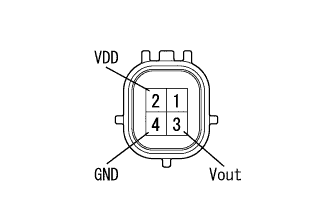
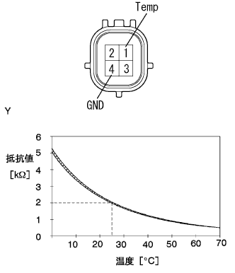

Battery Current Sensor Assembly (2AZ-FE) Inspection |
| 1. Battery Current Sensor Assembly Inspection |
 |
Resistance Inspection (Battery Current Sensor)
Using SST (Toyota electrical tester), inspect the resistance between each terminal.
| Tester Connection Tester positive - Tester negative | Condition | Standard |
|---|---|---|
| 2(VDD) - 4(GND) | Always | 3 to 10 kΩ |
| 2(VDD) - 3(Vout) | Always | 0.5 kΩ or less |
| 3(Vout) - 4(GND) | Always | 3 to 10 kΩ |
 |
Resistance Inspection (Battery Thermometer Sensor)
Using SST (Toyota electrical tester), inspect the resistance between terminals 1 (Temp) - 4 (GND).
| Tester Connection | Condition | Standard |
|---|---|---|
| 1(Temp) - 4(GND) | Always | 1.5 to 2.5 kΩ (20 to 30°C) |